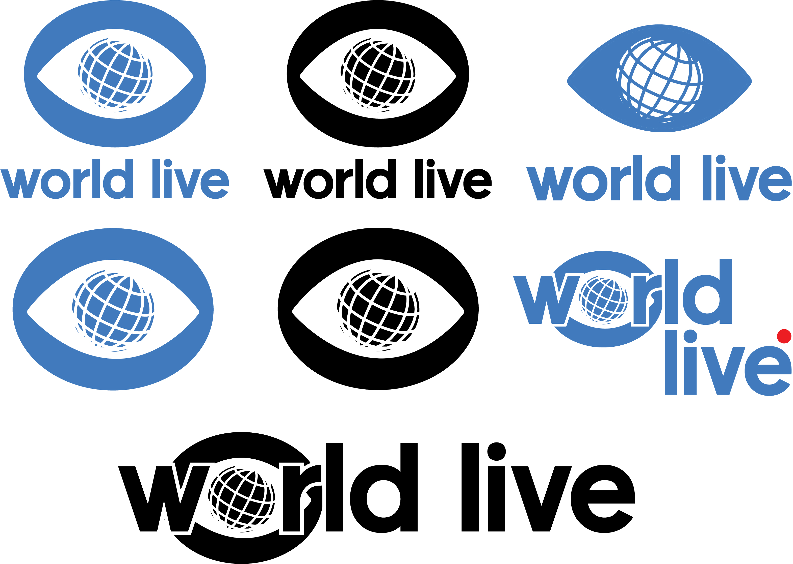
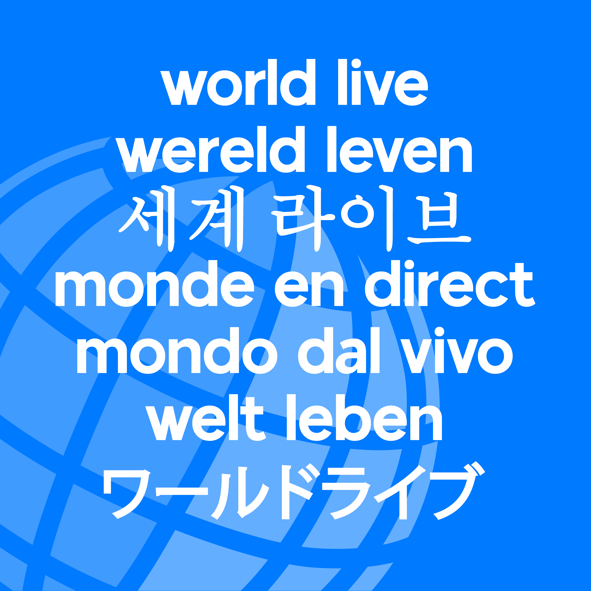
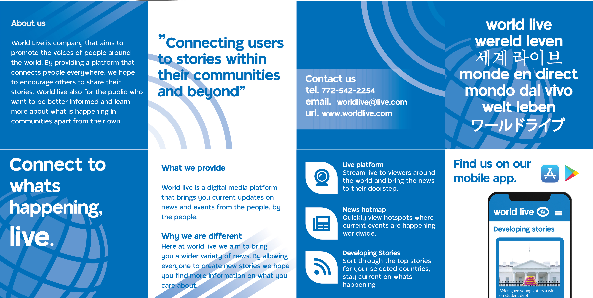
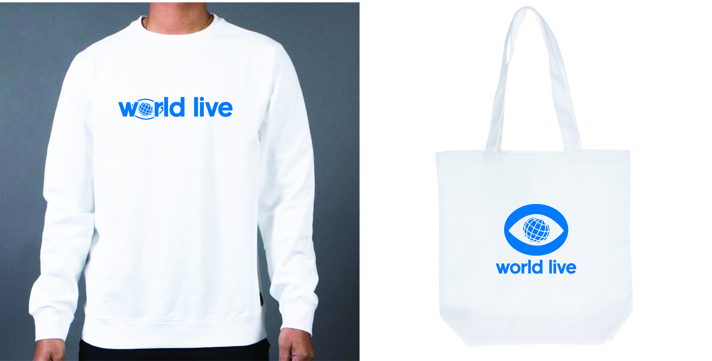

World Live
World Live is a branding project I did for a fictional news company. World Live is a platform which
allows its users to share posts similar to other social media sites, but these posts are then formatted into
news stories. This allows for easier user accessibility and opens social media to a new demographic that is familar
to reading long format news stories but is not comfortable navigativg traditional social media. World Live also features
a live video platform that allows users to report on stories live and turn any user into a journalist. The goal for
World Live is to bring news to all corners of the world, no matter where you are located.
For this branding I focused on creating a comprehensive brand image across all applications
by utilizing the globe logo in different ways and keeping the color ways consistent.
Features
• Logo Design.
The world live logo was inspired by classic news logos, but then reimagined to fit a more modern design style .

• Stationary system.
For the stationary I worked on keeping the design very minaml while also utilizing some of the main elements of the logo such as
the globe texture.

 • Poster & brochure.
I created two posters for World Live, one which focuses on their world centered approach and another that focus on their activism. The brochure
I created focuses on displaying the different features of World Live in a simplistic yet effective way.
• Poster & brochure.
I created two posters for World Live, one which focuses on their world centered approach and another that focus on their activism. The brochure
I created focuses on displaying the different features of World Live in a simplistic yet effective way.



• App & website mock up.
The app and website mock up designs feature a very simplistic
yet readable design that helps present the information in a way that is accesible for users

 • T-shirt & tote bag
I utilized an alterante World Live logo for the crewneck sweatshirt and tote bag while sticking with their traditional blue colorway.
• T-shirt & tote bag
I utilized an alterante World Live logo for the crewneck sweatshirt and tote bag while sticking with their traditional blue colorway.
